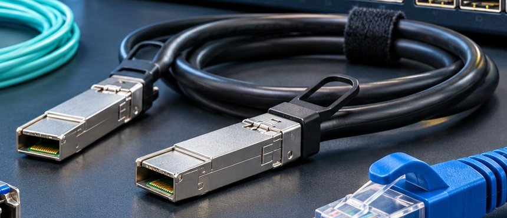
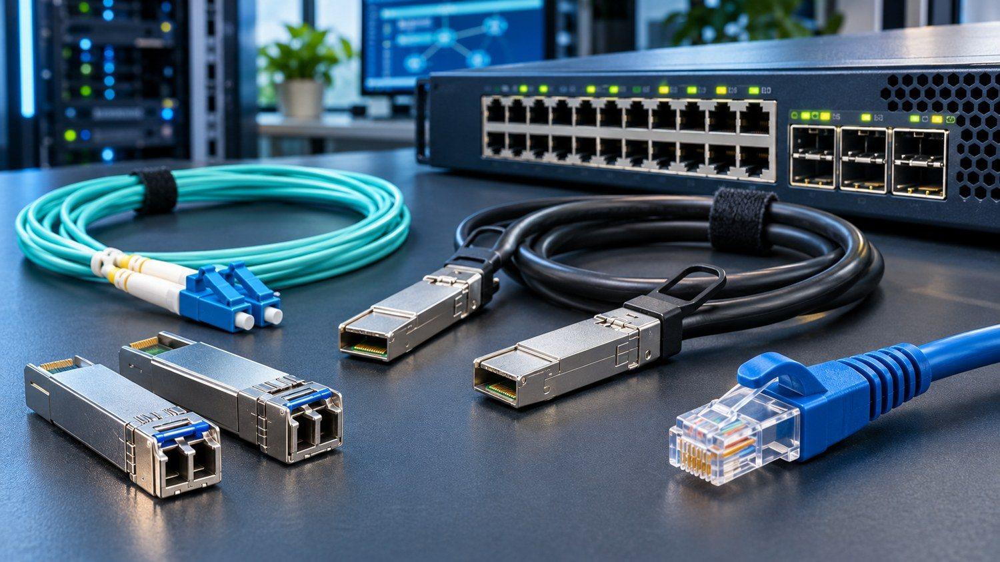
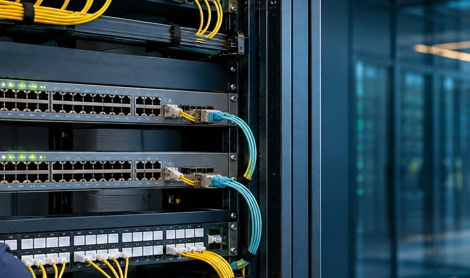

Crédits des images
Les images de matériel utilisées dans Nexorya, avec leur auteur, leur licence et leur source.
Les schémas et le logo sont des créations originales de Nexorya. Sous chaque image, une mention indique s’il s’agit d’une photographie ou d’une illustration, son auteur et sa licence. Une image d’un autre auteur garde la licence choisie par cet auteur.
| Image | Sujet | Auteur | Licence | Source |
|---|---|---|---|---|
| Baie réseau | Julien Broquet — Nexorya | CC BY-NC-SA 4.0 | voir l’original | |
| Connecteur RJ45 | Julien Broquet — Nexorya | CC BY-NC-SA 4.0 | voir l’original | |
 | Câble DAC | Julien Broquet — Nexorya | CC BY-NC-SA 4.0 | voir l’original |
 | Deux modules SFP optiques | Julien Broquet — Nexorya | CC BY-NC-SA 4.0 | voir l’original |
| Façade d’un switch : ports RJ45 et cages SFP | Julien Broquet — Nexorya | CC BY-NC-SA 4.0 | voir l’original | |
 | Jarretière optique avec connecteur LC duplex | Julien Broquet — Nexorya | CC BY-NC-SA 4.0 | voir l’original |
| Modules optiques branchés dans un switch | Julien Broquet — Nexorya | CC BY-NC-SA 4.0 | voir l’original | |
 | Modules SFP, câble DAC, jarretière fibre et câble RJ45 devant un switch | Julien Broquet — Nexorya | CC BY-NC-SA 4.0 | voir l’original |
 | Panneau de brassage optique et switch | Julien Broquet — Nexorya | CC BY-NC-SA 4.0 | voir l’original |
 | Switches d’accès en baie | Julien Broquet — Nexorya | CC BY-NC-SA 4.0 | voir l’original |